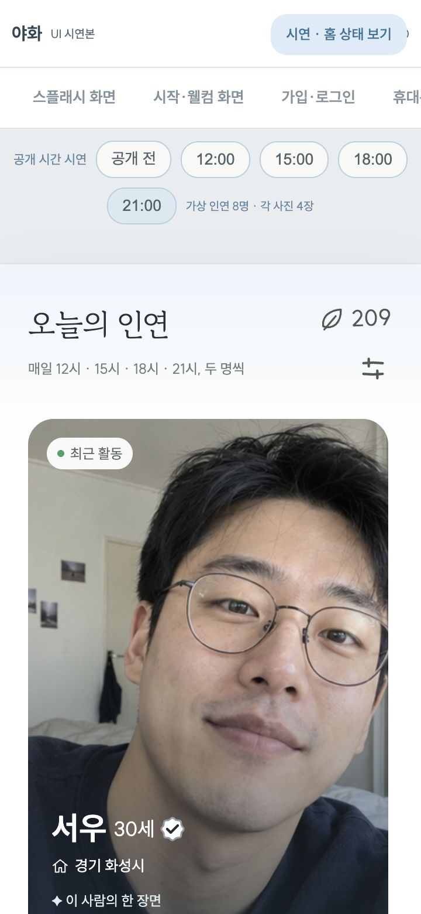
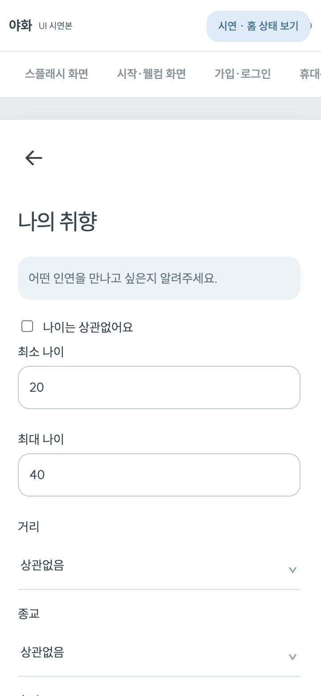
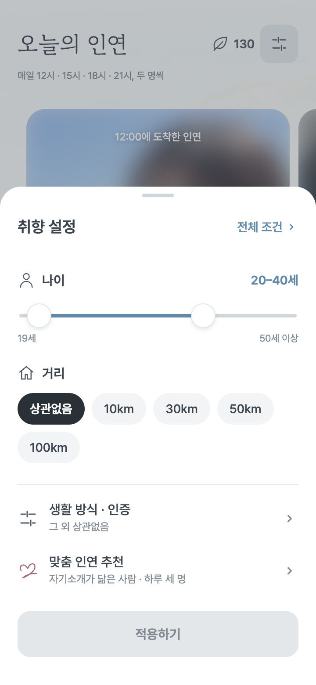
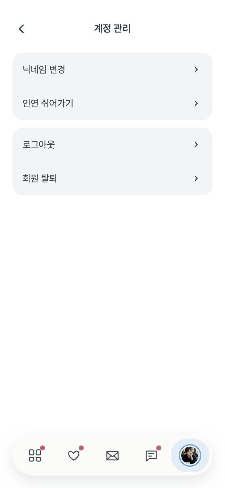
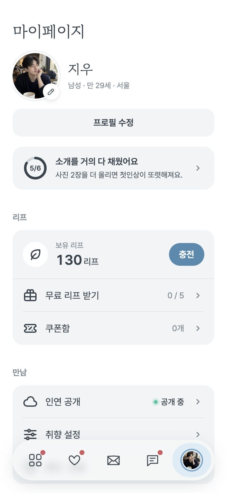
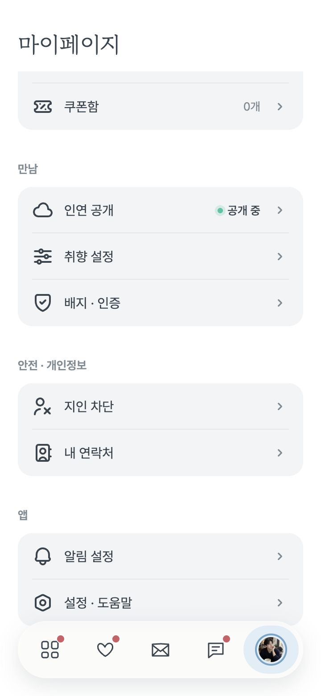
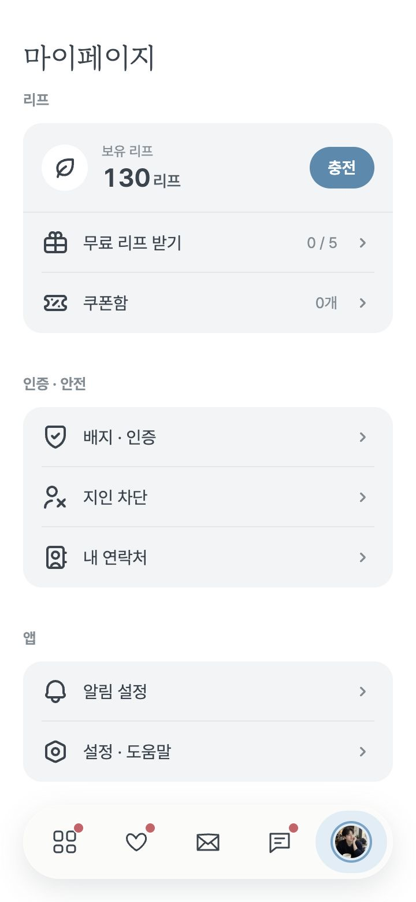
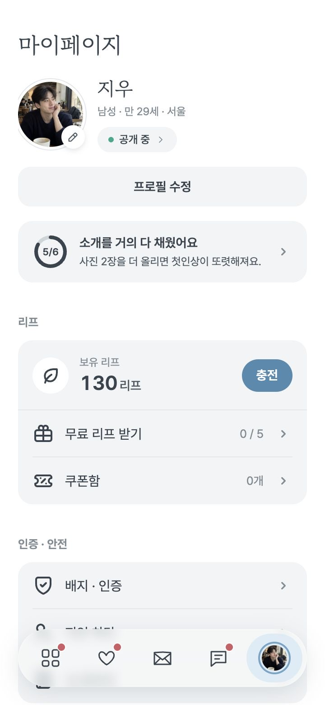
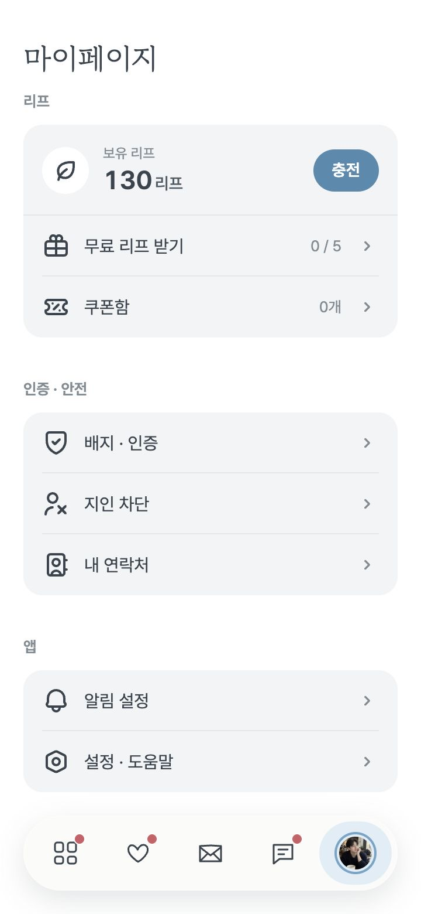
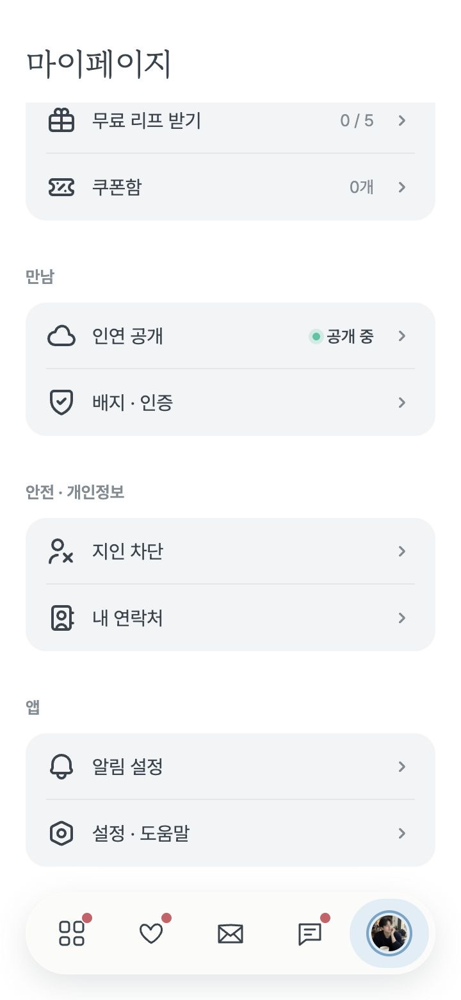

인연 공개 · 취향 설정 자리
- 팀 링크: 마이페이지에 둘 다 없어요. 취향 설정은 홈 "오늘의 인연" 오른쪽 조절 버튼(소개받을 상대 설정), 인연 쉬어가기는 설정 · 도움말 › 계정 관리 안에 있어요.
- 우리: 같은 두 길이 이미 있어요 — 홈 조절 버튼 → 취향 설정 시트(전체 조건 ›), 설정 · 도움말 › 계정 관리 › 인연 쉬어가기. 그래서 마이페이지 "만남" 묶음의 인연 공개 · 취향 설정은 겹치는 길이에요.
- P1 팀처럼: 둘 다 빼고 "만남" 묶음을 없애요. 남은 배지 · 인증은 지인 차단 · 내 연락처와 묶어 "인증 · 안전".
- P2: P1 + 이름 아래 작은 칩 "● 공개 중 ›"(쉬면 "쉬어가는 중"). 지금 공개 중인지가 한눈에 보이고 누르면 인연 공개로. 인증 개수 칩 자리를 써요.
- P3: 취향 설정만 빼요(홈에 있어서). 인연 공개는 "만남" 묶음에 배지 · 인증과 남겨요.
팀 링크

홈 · 오른쪽 조절 버튼
눌렀을 때 · 나의 취향우리에게 이미 있는 다른 길

홈 조절 버튼 → 취향 설정 시트
설정 · 도움말 › 계정 관리지금 마이페이지

위
아래시안

P1 · 둘 다 빼기
P2 · 이름 아래 공개 칩
P2 · 아래
P3 · 취향 설정만 빼기